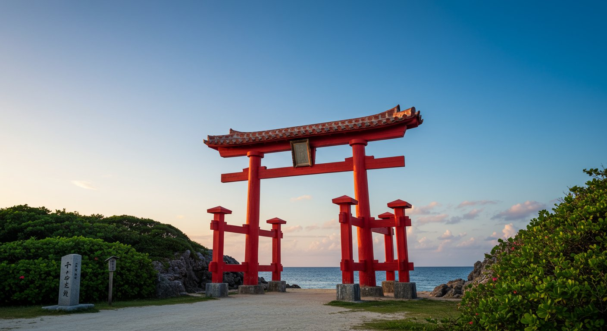
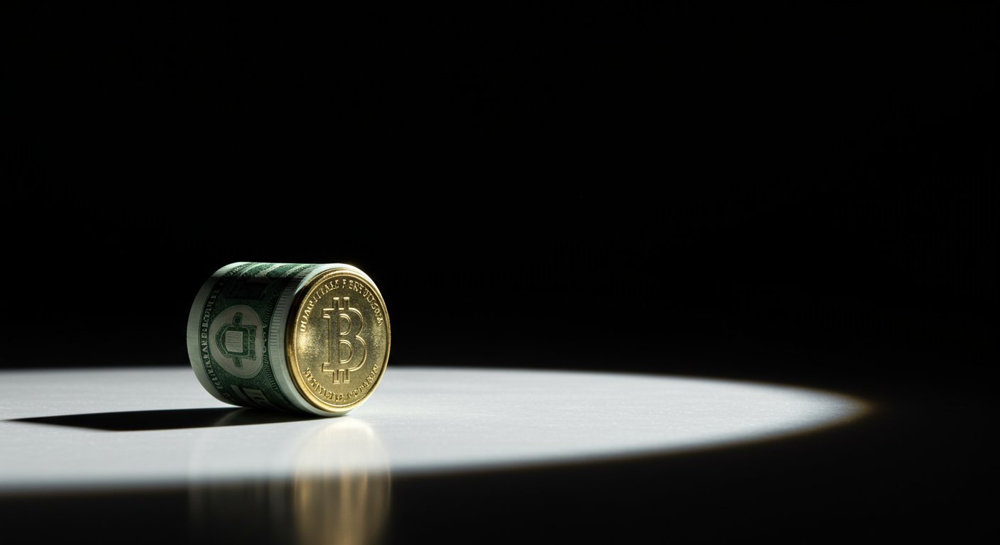

「二千円札がなぜ見かけなくなったのか。消えた理由が知りたい。」
「二千円札は今でも使えるのか。価値や買取相場はいくらなのか、入手方法も知りたい。」
このように考えていませんか？
この記事では、二千円札が普及しなかった3つの要因・法律上の有効性と店舗で拒否される理由・買取相場と高く売れる条件・入手方法を解説します。読めば、二千円札の背景を理解し、納得の使い方・売り方を選べるようになります。
※記事内で紹介している買取相場などは、買取市場での相場であり、『買取大吉』の買取価格を保証するものではありません。
この記事でわかること

二千円札は、2000年を記念して発行された日本銀行券です。沖縄サミット・ミレニアムの記念として登場した二千円札は、2003年を境に製造が中止され、現在は流通数が全紙幣の1%未満と言われています。
それぞれ詳しく解説します。
二千円札は、2000年7月19日に、沖縄サミット（主要国首脳会議）の開催とミレニアム（21世紀の到来）を記念して発行されました。当時の小渕恵三内閣総理大臣の発案により導入された新券種で、沖縄県を題材にしたデザインが採用されています。記念紙幣としての性格が強く、通常の流通を前提とした券種とは異なる経緯で誕生しています。
二千円札の表面には、沖縄の守礼門が描かれており、「守禮之邦」の額が掲げられています。裏面には、国宝「源氏物語絵巻」の「鈴蟲」の場面と、「紫式部日記絵巻」に描かれた紫式部の肖像が配されています。一千円札や一万円札と異なる独自の図柄で、記念紙幣らしさが出るデザインとなっています。
二千円札は、発行開始後に国立印刷局への製造発注が行われたのは2000年度（7.7億枚）と2003年度（1.1億枚）のみで、以降は新規の製造発注がありません。ATMやレジ・自動販売機などへの対応が進まなかったことや、消費者から「紛らわしい」という声が多かったことなどが理由とされています。現在は流通数が全紙幣の1%未満と言われ、日常的に目にする機会はほとんどなくなっています。

二千円札が普及しなかった要因には、政治的背景・技術的要因・社会的な受け止め方が関係しています。
順に解説します。
二千円札は、小渕恵三元首相の強い意向により導入されましたが、発行前の十分な検討や金融機関・小売店との調整が不足していた面があります。記念紙幣としての位置づけが強く、通常の一万円札・五千円札・一千円札のような流通インフラ整備が先行して進められませんでした。その結果、発行直後からATMやレジでの扱いが後手に回り、普及の土台が十分に整わなかったと指摘されています。
二千円札の受け入れには、ATM・レジ・自動販売機などの機器を二千円札対応に改修する必要があります。機器の更新には莫大なコストがかかるため、二千円札の流通量が少ないなかで改修投資が見合わず、対応が進みませんでした。対応していない機器が多いほど、二千円札は使われにくく、さらに流通量が減る悪循環に陥りました。
二千円札は、一万円札・五千円札・一千円札に慣れた消費者にとって、見慣れない額面でした。「二千円札を一万円札と間違える」「レジで扱いづらい」といった声が多く、紙幣として日常生活に馴染みにくい存在となりました。「紛らわしい」という不評が根強く、積極的に使いたいというニーズも広がったのです。
二千円札は法律上は有効な現行紙幣ですが、店舗やレジでは「使えない」と言われることがあります。
それぞれ解説します。
二千円札は、日本銀行券として法的に有効な現行紙幣であり、通貨の強制通用力により無期限で使用可能です。製造は中止されていますが、廃止・失効はされておらず、額面2,000円として支払いに使う権利があります。そのため、法律上は拒否する理由にはなりません。
法律上は使えるにもかかわらず「使えない」と言われる主な理由は、レジやATMが二千円札に対応していないことです。二千円札用のレジトレイやキャッシュボックスを用意していない店舗、二千円札を読み取れない自動券売機・自動販売機などでは、運用上受け取りを断るケースがあります。悪意のある拒否ではなく、機械や運用の都合によることが多い傾向です。
二千円札での支払いを断られた場合、「法律上は有効な現行紙幣です」と丁寧に伝え、有人レジで対応してもらえるか確認してみましょう。自動レジでは通らない場合でも、有人レジであれば二千円札を手で確認して受け取ってもらえる店舗があります。レジ担当者が判断に迷っている場合は、日本銀行の公示や財務省の情報を示すと理解を得やすくなるでしょう。
店舗でどうしても受け取ってもらえない場合は、銀行窓口や郵便局で二千円札を他券種に両替できます。手数料は通常かかりません。手順は次のとおりです。
窓口で「二千円札を両替したい」と伝えれば、対応してもらえるケースがほとんどです。
二千円札は全国ではほとんど見かけなくなっていますが、沖縄県では比較的流通していると言われています。
それぞれ解説します。
二千円札の表面に沖縄の守礼門が描かれていることから、沖縄県内では発行当初から二千円札を「沖縄の顔」として普及させる運動が展開されました。県民や観光関連団体が、二千円札を使う・受け入れる取り組みを推進し、県内の店舗や金融機関が二千円札対応を進めた経緯があります。
沖縄県内の一部金融機関や観光地周辺のATMでは、二千円札の出金に対応しているところがあります。県外では二千円札が出金できるATMはほぼなく、沖縄ならではの特徴と言えるでしょう。
沖縄を訪れる観光客のなかには、「二千円札を沖縄で使いたい」「記念に入手したい」という需要があり、空港や観光地の両替所で二千円札に両替する人も少なくありません。観光客による両替と、県内での積極的な受け入れが相まって、沖縄では二千円札の流通量が全国と比べて多くなっています。
※記事内で紹介している買取相場などは、買取市場での相場であり、『買取大吉』の買取価格を保証するものではありません。
二千円札の買取相場は、状態や記番号によって幅があります。通常品は額面通り、レアな券種は額面を上回ることもあります。
それぞれ解説します。
使用感がある通常品の二千円札は、買取相場はおおむね額面（2,000円）前後になることが多い傾向です。二千円札は製造中止後も法的に有効であり、銀行での両替も額面通りで可能なため、一般的な流通品としての価値は額面程度が目安となります。業者・相場により異なるため、査定時に確認することをおすすめします。
Yahoo!オークションやメルカリでは、「二千円札」「AA券 二千円札」などのキーワードで過去の取引価格を確認できます。通常品は額面前後の落札が多く、未使用ピン札やAA券・ゾロ目・キリ番などは額面を上回る落札になることがあります。買取店では即金で引き取るため、オークションの落札価格より低めの水準になることが一般的です。出品手数料・支払い手数料を考慮すると、専門業者への売却が手軽な場合もあります。
2024年7月から新紙幣（一万円札・五千円札・一千円札）の流通が始まりました。二千円札は刷新対象に含まれていないため、引き続き現行紙幣として有効です。新紙幣発行により「旧いお札」への関心が高まる一方で、二千円札は元々流通量が少なく希少性があることから、コレクター需要は維持されている傾向があります。業者・相場により価格は変動するため、無料査定で最新の相場を確認することをおすすめします。
二千円札が高く売れる条件のポイントは以下のとおりです。
それぞれ詳しく解説します。
記番号が「AA」で始まるAA券は、二千円札のなかでもレアな初期ロットとして知られ、額面を上回る査定が出やすい傾向があります。発行当初の記番号帯であり、コレクターから人気が高い券種です。そのほか、「ZZZ」で終わるZZZ券なども、レア番号としてプレミアが付くことがあります。
未使用で折り目や汚れがなく、状態が良いものほど買取価格は高くなる傾向です。キズやシミ、角の折れがあると評価が下がることがあるため、できるだけ状態を保ったまま査定に出すと有利でしょう。
製造時のミスによるエラープリント（印刷のずれ・重ね刷りなど）や福耳（耳部分の裁断ずれ）は、エラー紙幣としてコレクター需要があり、高額買取の対象となる場合があります。エラーかどうかの判断が難しい場合は、買取店の鑑定士に無料査定で見てもらうと、価値の有無についてアドバイスが得られます。
キリ番号（200000・100000など）、ゾロ目（111111・000001など）、連番（123456・234567など）は、レア番号としてプレミアが付くことがあります。複数枚まとめて出せる場合は、セットとして高値がつく場合もあるでしょう。
二千円札を入手する方法はいくつかあります。
それぞれ解説します。
銀行窓口や郵便局では、二千円札への両替を希望できます。二千円札の在庫があれば、他の券種から二千円札に交換してもらえる場合があります。ただし、在庫状況は金融機関により異なり、必ずしも用意されていないことがあるため、事前に電話で確認すると安心です。
沖縄県内の一部金融機関のATMでは、二千円札が出金できるところがあります。また、那覇空港や観光地周辺の両替所では、二千円札への両替に対応していることが多い傾向です。沖縄旅行のついでに二千円札を入手する方法として知られています。
沖縄以外でも、ごく一部の金融機関や地域によっては、二千円札の出金に対応しているATMがあると言われています。ただし、対応状況は金融機関の判断により変動するため、現時点で確実に二千円札が出るATMを公表しているところはほとんどありません。二千円札を確実に入手したい場合は、沖縄での両替や、銀行窓口での事前問い合わせが確実な方法です。
Yahoo!オークションやメルカリ、古銭・紙幣を扱う古物商では、二千円札が販売されていることがあります。AA券や未使用ピン札などはプレミア価格で取引されるケースも多く、額面を超える価格で購入することになります。コレクション目的で入手したい場合は、オークションや古物商での購入が選択肢となるでしょう。
『買取大吉』では、ライフスタイルに合わせて選べる3つの買取方法を提供しています。
それぞれの方法を詳しくご紹介します。
予約不要で相談でき、その場で査定から現金化まで進めやすいのが店頭買取の強みです。
「即座に現金を手にしたい」「鑑定士と直接対話して相場を聞きたい」という場合は、店頭買取が最適です。最寄りの『買取大吉』の各店舗へ品物を持ち込むだけで、予約不要で査定を受けられます。気軽にご来店ください。
品数が多い場合や持ち運びが不安な場合は、自宅で完結できる出張買取が便利です。
鑑定士が自宅を訪問し、玄関先などで査定から買取手続きまでを行います。移動の手間や運搬リスクを減らしたい方に向いています。
店舗に行く時間がない場合は、非対面で進められる宅配買取が選択肢になります。
宅配キットで送付し、査定結果に承諾すれば指定口座へ振り込みとなる流れです。自分のペースで手続きしたい方に適しています。
二千円札に関するよくある質問をまとめました。
順に回答します。
二千円札の偽札かどうかは、透かし・凹版印刷・識別マーク・用紙の感触で判断できます。光にかざすと守礼門や額の透かしが浮かび、肖像や文字には凹凸（凹版印刷）があり触るとざらざらした感触があります。また、角度を変えると見え方が変わる識別マークが印刷されています。本物の日本銀行券は特殊な用紙を使用しているため、手触りや光の当たり方で判別の参考にしてください。不安な場合は、買取店の鑑定士に無料査定で見てもらうと安心です。
二千円札は日本国内で流通している日本銀行券であり、海外では一般的な決済手段としては使えません。ただし、守礼門や源氏物語絵巻といった日本らしいデザインから、外国人観光客のなかには「記念に欲しい」と二千円札を好む人もいます。沖縄では観光客向けの両替需要があり、海外からの関心も一定あると言われています。
二千円札は製造中止から20年以上が経過し、流通量は年々減少しています。通常品は額面前後が一般的ですが、AA券や未使用ピン札・レア番号・エラー紙幣などは、コレクター需要により額面を上回る価格で取引されることがあります。今後の価格推移は需給や市場状況により変動するため、保有している二千円札が高く売れる条件に当てはまるかどうかは、無料査定で確認することをおすすめします。『買取大吉』で無料査定をしてみてはいかがでしょうか。
※記事内で紹介している買取相場などは、買取市場での相場であり、『買取大吉』の買取価格を保証するものではありません。
二千円札は、2000年に沖縄サミット・ミレニアムを記念して発行された日本銀行券で、表面は守礼門、裏面は源氏物語絵巻のデザインです。2003年を境に製造が中止され、普及しなかった要因には発案経緯・ATMやレジへの対応コスト・「紛らわしい」という不評・流通量の少なさが関係しています。法律上は無期限で有効な現行紙幣であり、店舗で拒否される場合は有人レジでの対応や銀行窓口での両替が対処法です。沖縄県では守礼門デザインにちなんだ普及運動やATM対応により、比較的流通しています。買取相場は通常品で額面前後、AA券・未使用ピン札・レア番号・エラー紙幣は額面を上回る査定が出ることがあります。二千円札を売りたい方や、高く売れる条件かどうか確認したい方は、『買取大吉』の無料査定を利用してみてはいかがでしょうか。